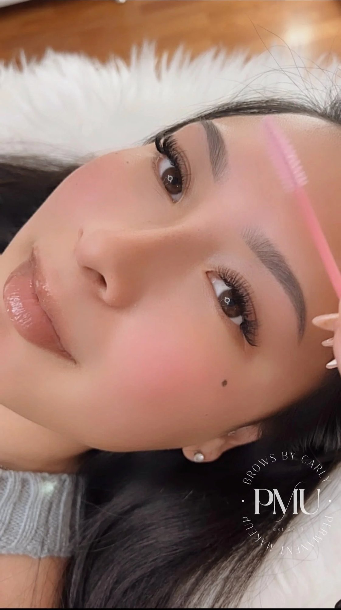

Powder Brows in San Diego & the Bay Area
Soft shading with a more defined, makeup inspired finish.
Also called ombré brows, powder brows build a soft gradient of pigment: lighter at the front and fuller through the tail. Healed, they look like a softly filled-in brow, with your natural hairs showing through.
- First session
- 2 hours
- Touch-up
- 1 hour
- Deposit
- $100–$200

Powder brows may be for you if…
- 01You fill in your brows every day.
- 02Your brows are sparse, uneven or have gaps.
- 03You want more shape or definition.
- 04You’ve lost brow hair over time.
- 05You want a lower maintenance brow routine.

Got oily skin?
Oily skin can soften fine detail as it heals, so a shaded technique like powder brows is typically recommended for better longevity. Dry skin often holds pigment well and heals with a soft, even finish.
How it works
Four steps from first conversation to healed powder brows. Permanent makeup is a two-step process, so your touch-up is part of the plan from day one.
-
Consult
Free · 15 min video, or $50 in personOn Zoom or FaceTime, or 30 minutes in person. Talk through your goals, skin and any previous brow work.
-
Mapping & shade
Before any pigment goes inCarly maps your brows to your bone structure, natural growth and muscle movement, then chooses a pigment for your skin tone, undertone and brow hair.
-
Shading
About 2 hoursNumbing cream is used throughout, and you approve the shape before any pigment goes in.
-
Touch-up
Touch-up 1 hr, from 4 weeksYour touch-up refines the healed result once your skin has settled.


Give them time
Fresh brows look darker and sharper, then soften 30–50% as they heal. Once powder brows heal, the pigment becomes lighter, the edges soften and your natural brow hairs show through. Carly plans for that softer result when she chooses your pigment and saturation.
- Day 1Fresh & defined
- Days 2–4Darker & settling
- Days 3–7Flaking begins
- Days 7–10Fading & patchy
- Days 10–21Light & soft
- Weeks 4–6Healed result
Powder brow results
More on @browsbycarlyc



“I told her I was interested in microblading because I wanted a natural look but that I have oily skin. Carly was honest and advised the ombre brow would be much more successful with my skin type and took not only the time to explain why . . .”
{{ q.a }}


Book your powder brows
A $100–$200 deposit holds your appointment. Afterpay is available. Not sure yet? Start with a free virtual consult.